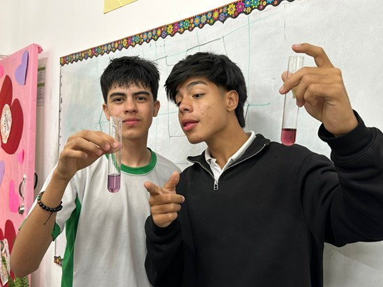

| Start | Introduction and Hypothesis | Materials and Procedure | Results and Conclusions |
|---|
| Substances Tested | Color After Mixing | Acid/ Base/ Neutral? | Estimated pH Range |
| Lemon | Red | Acid | 1 |
| Orange juice | Pink | Acid | 3 |
| Milk | Light purple | Slightly Acid | 6 |
| Chlorine | Light yellow | Basic | 13 |
| Soap | Purple | Neutral | 7 |
| Lipton | Dark pink | Acid | 3 |
| Yogurt | Light purple | Slightly Acid | 6 |
| Bicarbonate | Turquoise | Basic | 9 |
| Coca Cola (soda) | Dark red | Acid | 0 |
| Alcohol | Purple | Neutral | 7 |
| Pineapple juice | Red | Acid | 1 |
| Pee (Ronald) | Red/Pink | Acid | 2 |
| Pee (Nelson) | Light purple | Slightly Acid | 6 |
The experiment allowed us to observe how red cabbage juice changes color when mixed with different substances,
indicating their level of acidity or basicity. Acidic substances like lemon, orange juice,
Lipton tea, Coca-Cola, and pineapple juice caused the color to shift to red or pink, which is
characteristic of low pH levels (between 0 and 3). Slightly acidic substances such as milk, yogurt, and one
person's urine (Nelson) showed a light purple color, indicating a pH around 6. On the other hand, basic
substances like chlorine and bicarbonate turned the color to light yellow and turquoise, respectively,
indicating high pH levels (9 to 13). Finally, substances like soap and alcohol remained purple, which
indicates a neutral pH around 7.
This experiment demonstrates that red cabbage juice is an effective natural indicator for identifying the
acidic or basic nature of various common substances through simple color changes.
